観測されたランダムポイントとし、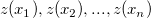 は一連のポイントそれぞれの計測された値とします。計測されていない与えられたポイント
観測されたランダムポイントとし、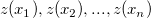 は一連のポイントそれぞれの計測された値とします。計測されていない与えられたポイント は、通常Krigingに従い、この未計測ポイントの推定値 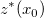 は、以下のように記述できる計測されたポイントの加重線形組み合わせによって生成されます。
は、通常Krigingに従い、この未計測ポイントの推定値 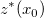 は、以下のように記述できる計測されたポイントの加重線形組み合わせによって生成されます。
XYからZを補間
与えられたXY値のセットでXYデータを補間します
必要なOriginのバージョン: 9.1 SR0以降
1.interp2 ixy:=[XYZRandomGaus]"XYZ Random Gaussian"!(D,E) ir:=[XYZRandomGaus]"XYZ Random Gaussian"!(A,B,C) method:=rk pts:=3 smooth:=4;
スクリプトからXファンクションにアクセスする場合、追加のオプションスイッチについてのページを参照してください。
| 表示 名 |
変数 名 |
I/O と データ型 |
デフォルト 値 |
説明 |
|---|---|---|---|---|
| 補間に使用するXYの値 | ixy |
入力 XYRange |
|
指定されたXY値の入力XY範囲を指定します。 |
| 入力 | ir |
入力 XYZRange |
|
XYZデータグループの入力XYZ範囲を指定します。 |
| 手法 | method |
入力 int |
|
使用する補間手法を指定します。8つの手法から選択できます。
オプションリスト：
詳細は下のアルゴリズムを参照してください。 |
| 検索半径 | radius |
入力 double |
|
検索範囲を指定します。手法でランダムKriging法または加重平均法を選択した場合に利用できます。 |
| 最小ポイント | pts |
入力 int |
|
最小ポイント数を指定します。手法でランダムKriging法を選択した場合に利用できます。 |
| スムージング因子 | smooth |
入力 double |
|
Kriging またはスプラインスムージング因子を指定します。手法でランダムKriging法またはスプラインを選択した場合に利用できます。 |
| 重みの入力 | weight |
入力 vector |
|
重みとしてベクトルを指定します。手法でスプラインを選択した場合に利用できます。 |
| 重み関数局所因子 | nw |
入力 int |
|
重み関数の局所因子を指定します。手法でランダムShepard法を選択した場合に利用できます。 |
| 二次補間局所因子 | nq |
入力 int |
|
二次補間局所因子を指定します。手法でランダムShepard法を選択した場合に利用できます。 |
| 補間の結果 | oz |
出力 vector |
|
補間結果を出力する場所を指定します。 |
この Xファンクションは、8つの手法 (近傍、ランダムKriging、ランダムRenka Cline、ランダムShepard、ランダムTPS、スプライン、三角、加重平均）を使用して、既存のXYZデータのグループを補間して、与えられた (x,y) に対するZ値を検索します。
interp2Xファンクションを使用して xy から z を補間するには、次のようにします。
interp2 -d;
Interp2 ダイアログボックスが開きます。Interp2 は、周囲の観測値から未測定の位置の変数を推定します。Xファンクション Interp2 で使用できる手法は8つあり、各手法とアルゴリズムの対応は下表のとおりです。
| メソッド | アルゴリズム |
|---|---|
| 近傍 | 最近傍補間 |
| ランダムKriging法 | 通常クリギング補間 |
| ランダム Renka Cline法 | 三角法ベースのRenka Cline補間 |
| ランダム Shepard法 | 修正シェパード補間 |
| ランダムTPS法 | ランダムTPS補間 |
| スプライン | バイキュービックB-スプライン補間 |
| 三角形 | 三角法ベースのRenka Cline補間 |
| 加重平均法 | 逆距離加重法（IDW)補間 |
最近傍アルゴリズムでは、補間されるXとYの値に最も近い点を検索し、補間結果としてこの検索ポイントのZ値を使用します。この手順は、他の隣接点を含めず、 区分定数補間が生じます。このアルゴリズムはとても単純なので結果曲面はスムーズになりません。
Originでは、関数ocmath_2d_kriging_scatで通常Kriging補間を実行します。通常Krigingの基本的な手順は、以下のようになります。
観測されたランダムポイントとし、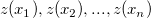 は一連のポイントそれぞれの計測された値とします。計測されていない与えられたポイント は、通常Krigingに従い、この未計測ポイントの推定値 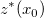 は、以下のように記述できる計測されたポイントの加重線形組み合わせによって生成されます。
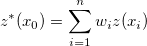
ここで は対応するポイントの重みです。
は対応するポイントの重みです。
未計測ポイント の推定値 を取得するために、計算に寄与するそれぞれの計測されたポイントの重みを計算する必要があります。
第一に、ポイントのランダム関数は、結果の普遍性のために変動しないと仮定します。つまり、下式で予測された値はゼロである必要があります。
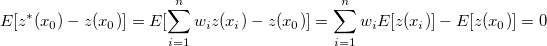
明らかに、 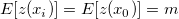 （ は平均）なので、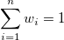を取得します。
は平均）なので、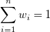を取得します。
次に、エラーのための最適の分散を満たす必要があります。これは、以下の式で表される分散の最小化です。
![\sigma_0^2 = Var[z^*(x_0)-z(x_0)]
= E[((z^*(x_0)-z(x_0))-E[z^*(x_0)-z(x_0)])^2]
= E[(z^*(x_0)-z(x_0))^2]
= E[(\sum_{i=1}^nw_iz(x_i)-z(x_0))^2]
= E[(z(x_0))^2] - 2E[z(x_0)\sum_{i=1}^nw_iz(x_i)] + E[(\sum_{i=1}^nw_iz(x_i))^2]
= C(x_0, x_0) - 2\sum_{i=1}^nw_iC(x_i, x_0) + \sum_{i=1}^n\sum_{j=1}^nw_iw_jC(x_i, x_j)
= minimum](../images/Interp2/math-d5c87c18840e2e654b0f8bfb4485a5d2.png "\sigma_0^2 = Var[z^*(x_0)-z(x_0)]
= E[((z^*(x_0)-z(x_0))-E[z^*(x_0)-z(x_0)])^2]
= E[(z^*(x_0)-z(x_0))^2]
= E[(\sum_{i=1}^nw_iz(x_i)-z(x_0))^2]
= E[(z(x_0))^2] - 2E[z(x_0)\sum_{i=1}^nw_iz(x_i)] + E[(\sum_{i=1}^nw_iz(x_i))^2]
= C(x_0, x_0) - 2\sum_{i=1}^nw_iC(x_i, x_0) + \sum_{i=1}^n\sum_{j=1}^nw_iw_jC(x_i, x_j)
= minimum")
上述の式による最小化は、Lagrange(言語)パラメータ  があり、以下のようにします。
があり、以下のようにします。
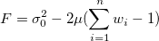
と に関する上式の偏第一微分を計算し、取得します。
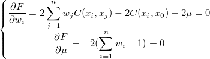
単純化したものを取得します。
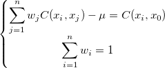
および 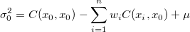
以下のようにします。
 & C(x_1, x_2) & \cdots & C(x_1, x_n) & 1
\\ C(x_2, x_1) & C(x_2, x_2) & \cdots & C(x_2, x_n) & 1
\\ \vdots & \vdots & \: & \vdots & \vdots
\\ C(x_n, x_1) & C(x_n, x_2) & \cdots & C(x_n, x_n) & 1
\\ 1 & 1 & \cdots & 1 & 0
\end{bmatrix},
W = \begin{bmatrix}w_1 \\ w_2 \\ \vdots \\ w_n \\ -\mu\end{bmatrix},
D = \begin{bmatrix}C(x_1, x_0) \\ C(x_2, x_0) \\ \vdots \\ C(x_n, x_0) \\ 1\end{bmatrix}")
偏第一微分は拡張でき、行列形式 として再記述できます。
重みを解くには、行列形式の両側に  行列の逆上列である 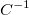 をかけ、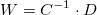を取得します。
行列の逆上列である 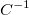 をかけ、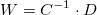を取得します。
最後のステップは、共分散の決定です。上述のすべての計算は、ランダム関数内のランダム変数はすべて同じ平均と分散を持つという仮定をベースにしています。このような仮定は、モデルバリオグラムとモデルの共分散間の関係を、以下のように導きます。
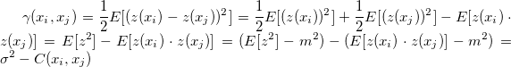
この関係式を偏第一微分に置くと、他の形式(行列形式は同様)を取得できます。
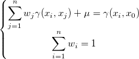
Originでは、以下のようにパワーモデルがバリオグラムの推定に使用されます。
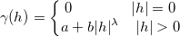
ここで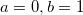 および 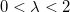 です。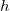 は と
と  間の距離を参照し、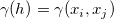となります。
間の距離を参照し、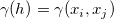となります。
この手法が使用された時の、このXファンクションのダイアログでは、ocmath_2d_kriging_scat 関数の  はスムージングファクター、検索半径と最小ポイント(補間を含む最小のポイント) は、radius と noctMin パラメーターに対応します。
はスムージングファクター、検索半径と最小ポイント(補間を含む最小のポイント) は、radius と noctMin パラメーターに対応します。
ランダム Renka Cline法のアルゴリズムはは、NAGにより提供された関数nag_2d_scat_interpolant (e01sac)をベースにしています。しかし、NAG Library: Advice on Replacement Calls for Withdrawn/Superseded Functionsによると、nag_2d_scat_interpolant (e01sac) は nag_2d_shep_interp (e01sgc) または nag_2d_triang_interp (e01sjc)で置き換えられます。つまり、ランダム Renka Cline法は、 nag_2d_triang_interp (e01sjc)をベースにした三角法に似たアルゴリズムをもちますが、後半は、最小の最大補間誤差が生成される可能性があるので推奨されます。
詳細は ランダム Shepardを参照してください。
詳細は ランダム TPSを参照してください。
nag_2d_spline_fit_scat (e02ddc) をベースにした手法で、散布データセットに3次スプライン近似を計算します。
この方法では、まずすべてのデータポイントを接続してドロネー三角形を作成します。三角形はできる限り等角に近く、2つの三角形は交差しません。三角形分割の理論については、このドキュメントを参照してください。
三角形分割が作成された後、三角形ベースの内挿法は、データ値と、その点を含む三角形の3つの頂点における一次偏微分のみに基づいて、ある点の値を計算します。これは、Renka と Cline によるメソッドを使用する nag_2d_triang_interp (e01sjc) を呼び出します。
加重平均法は、ocmath_gridding_weighted_averageをベースにした手法です。未知の値 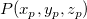 は、指定された検索半径 r 内の真の値 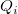 の周囲から計算されます。補間値は次式となります。
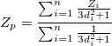
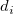 は、 および 間の距離です。検索半径内に値がない場合、Zp は欠損値になります。検索半径を拡大するということは、各ポイントは隣り合うポイントとの内部的な関係を強め、詳細な部分を失って、より滑らかな曲面を作成するということになります。
および 間の距離です。検索半径内に値がない場合、Zp は欠損値になります。検索半径を拡大するということは、各ポイントは隣り合うポイントとの内部的な関係を強め、詳細な部分を失って、より滑らかな曲面を作成するということになります。
8つの手法を比較してみます。6つの関数F1からF6（指数ピーク、急斜面の曲面、山のピーク、緩やかなピーク、急勾配のピーク、球形曲面）に、8つの手法を適用しました。手法は、Ref. 2のものです。 1089ポイントの補間は、100ノードの一様分布をベースにしています。平均誤差と最大誤差は、それぞれ1089ポイントの実際の値と補間値間の差の平均と最大です。下の棒グラフは、平均誤差と最大誤差の棒グラフです。
関数式：
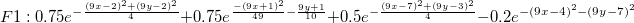
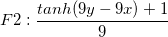
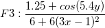
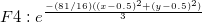
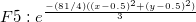
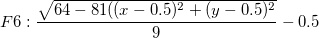
Keywords:interpolate